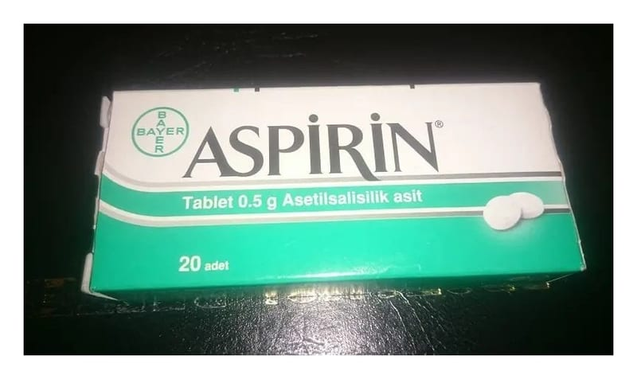

Aspirin 500 mg Tablet, 20 Adet

Ne için kullanılır
KT · Bölüm 1• ASPİRİN, asetilsalisilik asit adlı etkin maddeyi içeren ağrı kesici, ateş düşürücü, yangı (iltihap) giderici etkilere sahip bir ilaçtır.
• Her tablet etkin madde olarak 500 mg asetilsalisilik asit içerir. ASPİRİN, 20 tabletlik ambalajlarda sunulur. Bir yüzü BAYER diğer yüzü ASPİRİN 0,5 baskılı bikonveks, beyaz tablet şeklindedir.
• Hafif ve orta şiddetteki ağrılarda ve ateşli durumlarda kullanılır. Çocuk ve ergenler için, 3. ASPİRİN nasıl kullanılır? bölümüne bakınız.